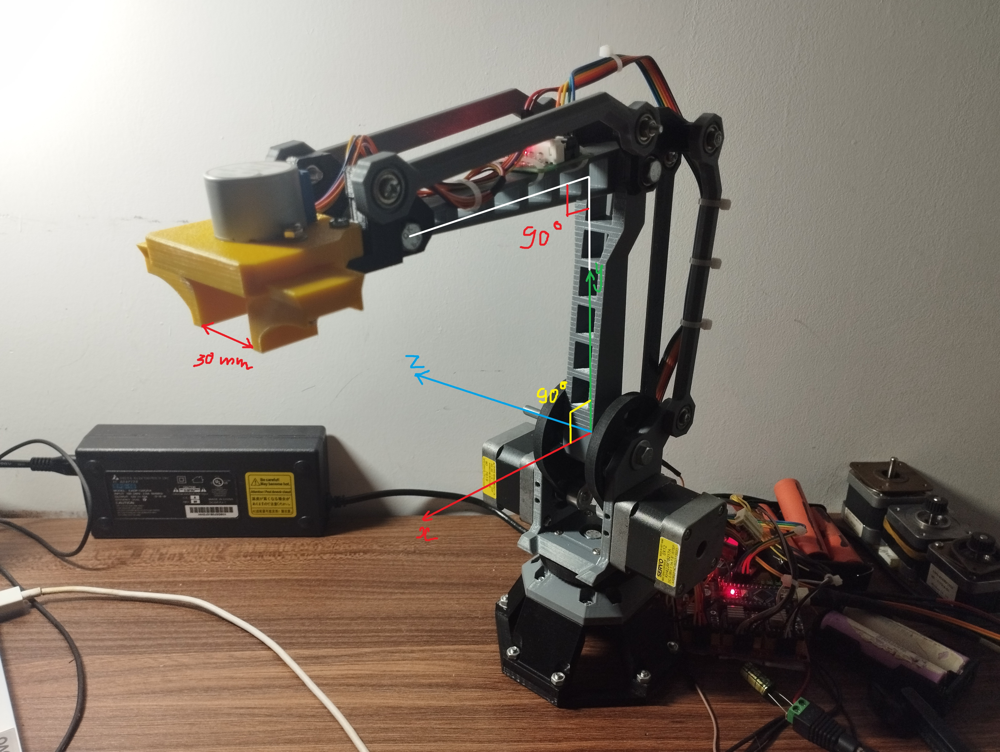
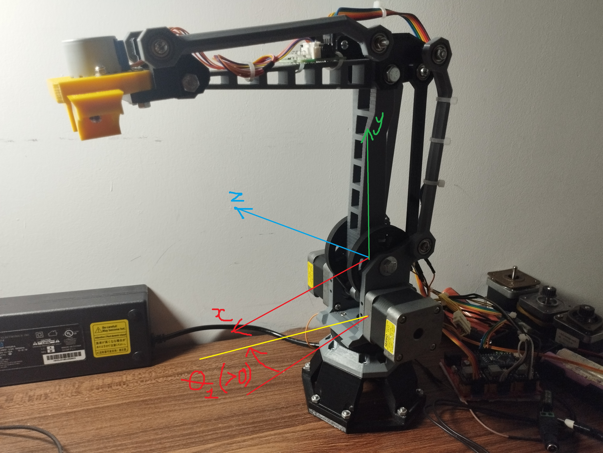
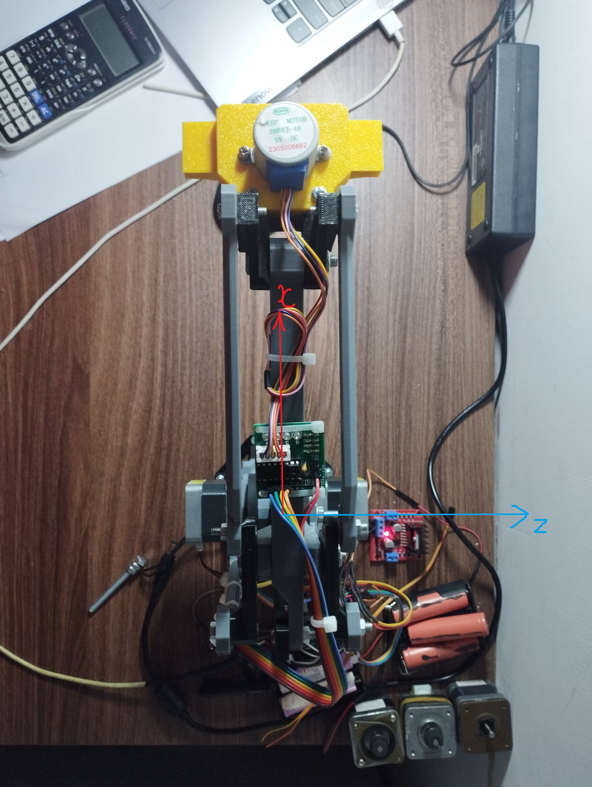
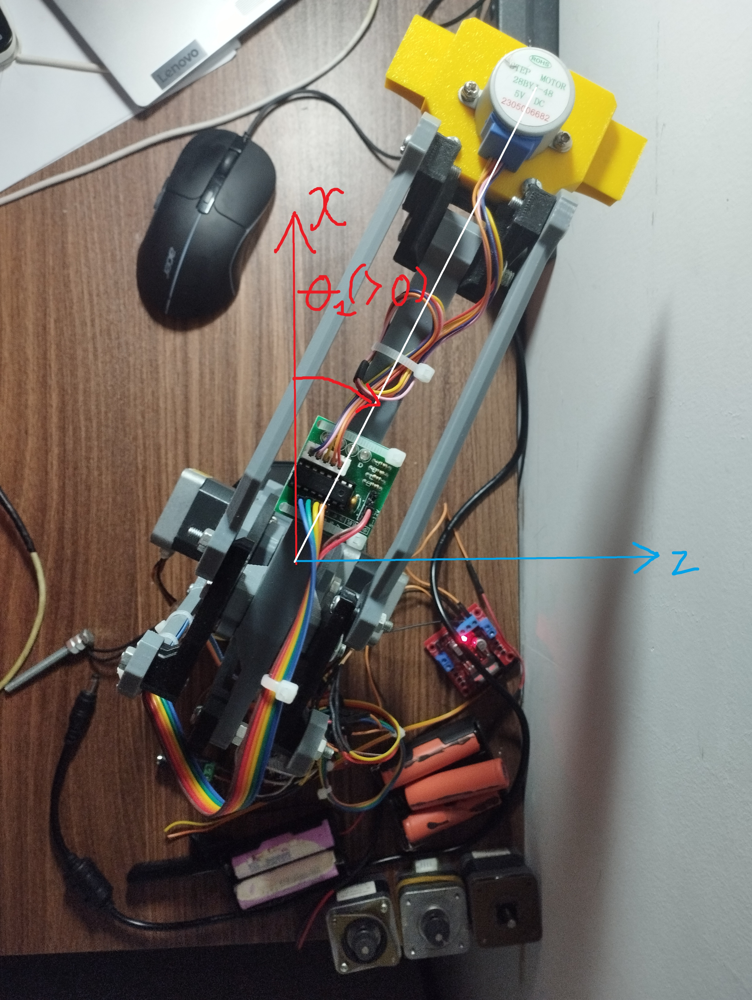
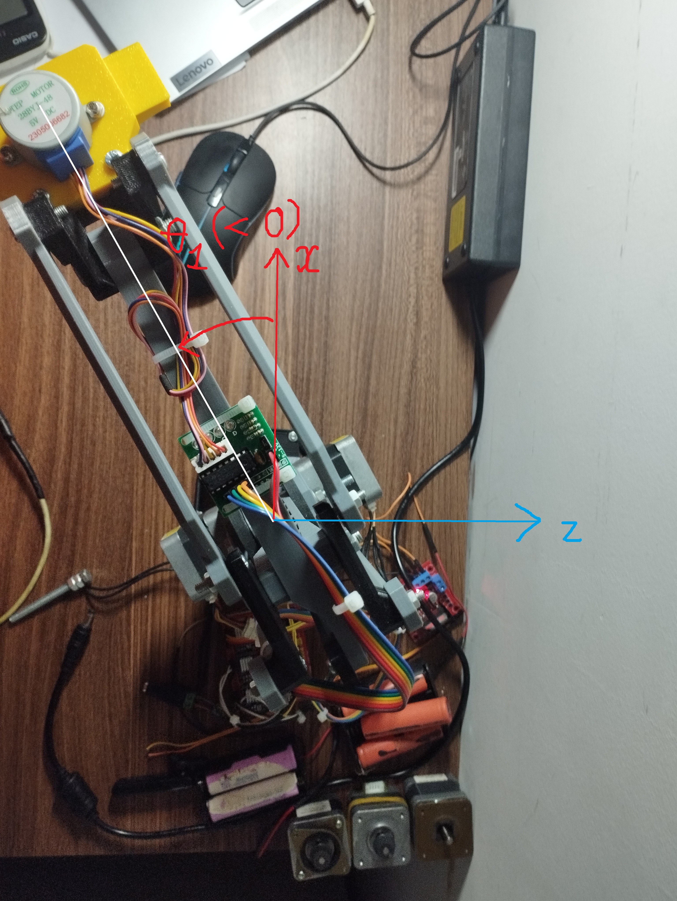
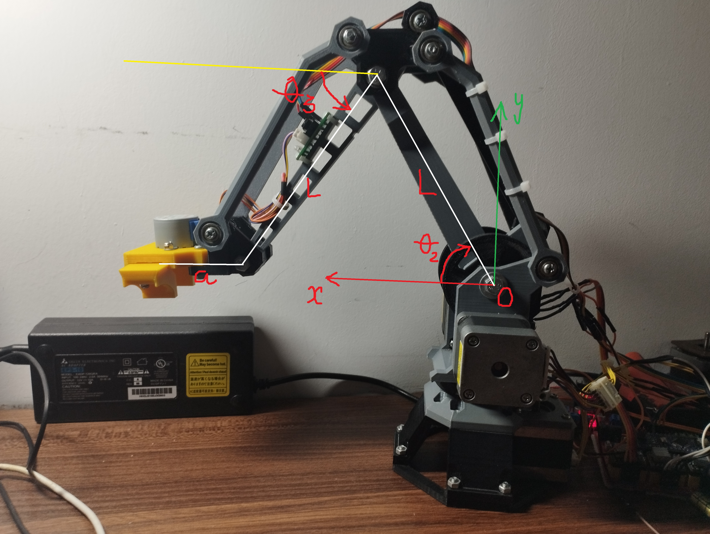
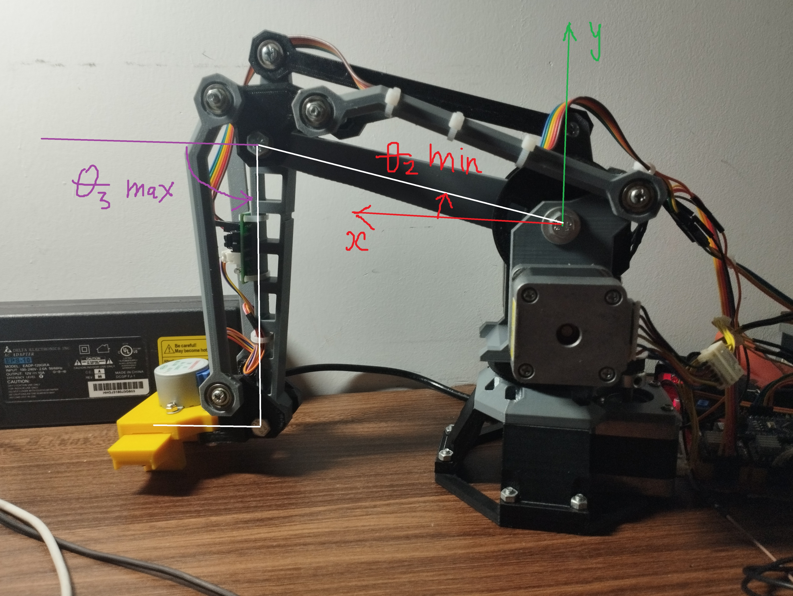
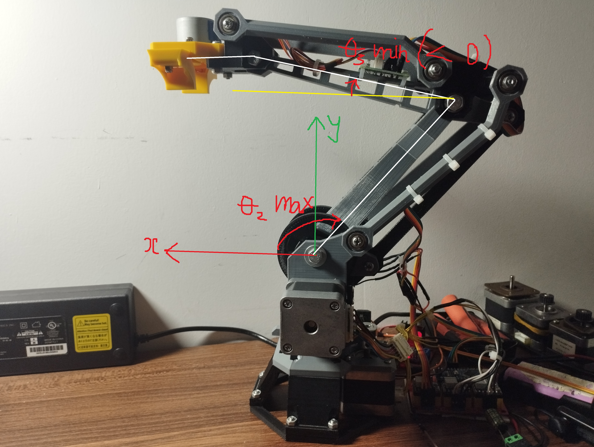
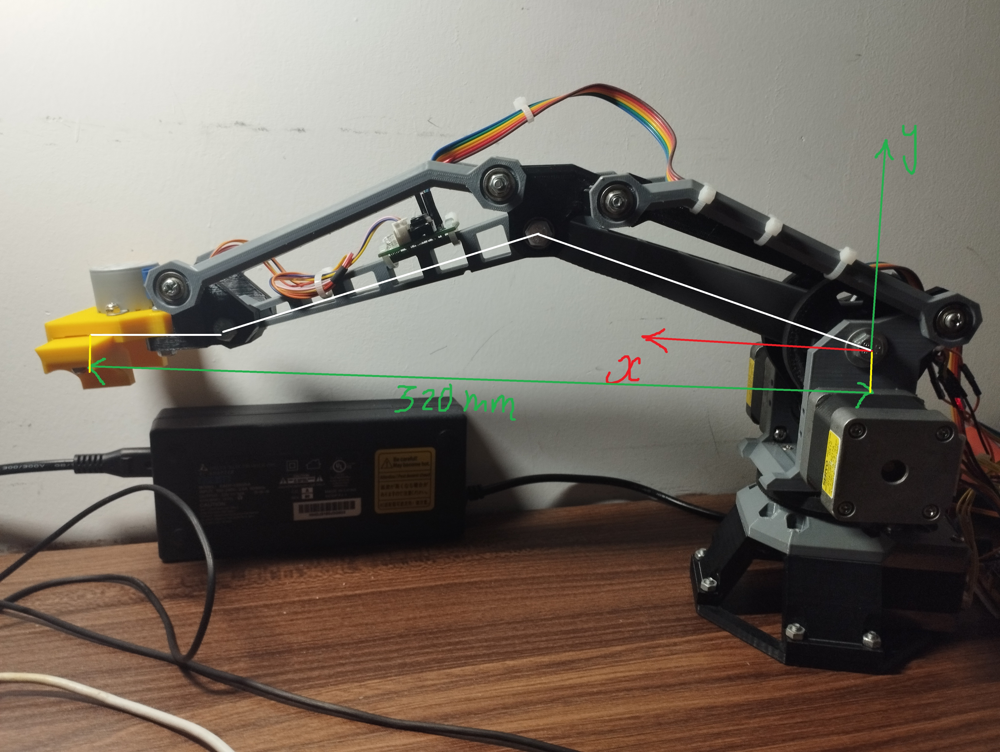

Kinematics & Workspace
Notation and Units
Symbol |
Meaning |
Unit |
|---|---|---|
x, y, z |
Cartesian position |
mm |
L |
Effective link length |
mm |
a |
Base offset |
mm |
theta1, theta2, theta3 |
Joint angles |
deg (docs), rad (computation) |
Mechanical Model
The physical arm uses shoulder/elbow 4-bar linkages. For kinematic computation, firmware uses an equivalent 3-DOF model:
Base rotation joint:
theta1Shoulder-equivalent joint:
theta2Elbow-equivalent joint:
theta3Model constants:
L = 140.0 mm,a = 54.0 mm
Home Pose and Axis Frame
theta1 = 0 deg (Robot facing middle/front)
theta2 = 90 deg (Lower shank perpendicular to ground plane)
theta3 = 0 deg (Upper shank parallel to ground plane)

Positive/Negative Rotation Directions
Base axis (theta1) Base rotation sign follows the base/top-view convention.




Shoulder and elbow (theta2, theta3) In side view (xy plane), positive theta2 and theta3 follow the arrow direction:

Joint Limits
Joint |
Range |
|---|---|
theta1 |
[-90, 90] deg |
theta2 |
[0, 130] deg |
theta3 |
[-17, 120] deg |
Forward Kinematics
Let R denote the radial projection in the xz plane:
Then:
Inverse Kinematics
Solve theta1 from x and z
\[R = \sqrt{x^2 + z^2}, \quad \theta_1 = \mathrm{atan2}(z, x)\]Reduce to side-plane problem (theta2, theta3)
Define:
\[K_1 = \frac{R-a}{L}, \quad K_2 = \frac{y}{L}\]Reformulate as:
\[A\cos\theta_3 + B\sin\theta_3 = C\]with \(A = -2K_1, \quad B = 2K_2, \quad C = -(K_1^2 + K_2^2)\)
Then compute:
\[\alpha = \mathrm{atan2}(B, A), \quad \phi = \arccos\left(\frac{C}{\sqrt{A^2 + B^2}}\right)\]\[\theta_{3,1} = \alpha + \phi, \quad \theta_{3,2} = \alpha - \phi\]Recover theta2
For each candidate value of theta3:
\[\begin{split}\cos\theta_2 = K_1 - \cos\theta_3 \\ \sin\theta_2 = K_2 + \sin\theta_3 \\ \theta_2 = \mathrm{atan2}(\sin\theta_2, \cos\theta_2)\end{split}\]
Workspace Limits
Axis-aligned bounds: X: [0, 320], Z: [-320, 320]
Y bounds from extreme angles:

Radial reach bounds in xz projection:

